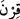

Namazı kılın, zekâtı verin, Allâh’a ve Rasûlü’ne itâat edin. Ey Ehl-i Beyt! Allah
sizden, sadece günahı gidermek ve sizi tertemiz yapmak istiyor.
“Evlerinizde oturun” Nâfi‘, Âsım ve Ebû Ca‘fer “__WORD__nın emri olarak “__WORD__ diye
okumuştur. Diğer kırâat imamları ise “__WORD__
”nin veya “__WORD__nun emri olarak “__WORD__
diye okumuştur. Yâni ey Peygamber’in hanımları, evlerinizden ayrılmayın ve
meskenlerinizde durun, demektir. Burada hitap, her ne kadar Hz. Peygamber (s.a.)’in
hanımlarına ise de diğer kadınlar da bu hükme dahildir.
Rivâyete göre ezvâc-ı mutahharadan Sevde bint Zem‘a (r.a.) Hz. Ömer (r.a.)
zamanında cenâzesi evinden çıkarılana kadar namaz, hac, umre için dahi odasından
dışarı adım atmamıştır. Kendisine “Niçin hac ve umre yapmıyorsun?” diye sorulunca
“Bize “Evlerinizde oturun” buyruldu.” demiştir.
Yabancılara karşı gözünü yum, kör ol!
Evden çıkınca mezardaymışsın gibi ol!
Bir rivâyette: “Kadınların mescidlerinin en hayırlısı evlerinin köşesidir.”[203]
buyrulmuştur.
“Eski cahiliye âdetinde olduğu” câhiliyye günlerinde kadınların açılıp saçıldığı
“gibi açılıp saçılmayın.”
Rağıb şöyle demiştir: Üzerine burçlar tasvir edilen ve güzel kabul edilen elbiseye “__WORD__ denir. Ziynetini ve güzelliğini, yâni güzel yerlerini erkeklere gösterme
konusunda o elbiseye benzedi mânâsına “__WORD__ denir. Buna göre mânâ, süslerinizi
göstermeyin, demek olur. Tehzîbü’l-masâdır’daki: “__WORD__ kadının kendini süslemesidir”
sözü de buna delâlet eder. “__WORD__ün asıl mânâsı burca çıkmaktır. Çünkü burca çıkan,
kendisine bakan herkes tarafından görülür. Bu görüş Ebû Ali’ye âittir.” Denilmiştir ki: “__WORD__ kadın kasrının burcundan göründü, demektir. “__WORD__ âyeti de buna delâlet
eder.” Nitekim el-Müfredât’ta böyle geçmektedir. Bazıları ise bu ifâdenin
‘böbürlenerek ve çalımlı yürümeyin’ demek olduğunu söylemişlerdir.
“Eski/ilk câhiliyye” dönemi, Âdem (a.s.) ile Nuh (a.s.) arasında geçen dönemdir.
Âdem (a.s.)’ın ölümü ile Nuh tufanı arasında 1272 sene vardır. Nitekim et-Tekmile’de
böyle geçmektedir. Son/diğer câhiliyye dönemi ise Hz. Muhammed (s.a.) ile Îsâ (a.s.)
arasında geçen zamandır. İbn Melek: “Câhiliyye, Rasûlullah (s.a.)’in peygamber olarak
gönderilmesinden önceki vakte yakın olan zamandır. O dönemde cehâlet çok olduğu için
bu isim verilmiştir.” demiştir.
Rivâyete göre Âdem (a.s.)’ın çocuklarından iki batından birisi ovalarda, diğeri ise
dağlarda yerleşti. Dağda yerleşenlerin erkekleri parlak yüzlü/yakışıklı, kadınları ise
çirkindiler. Ovaya yerleşenler ise bunun tersiydi. İblis insan suretinde gelip ovada
yaşayan bir adamın yanında işçi olarak çalışmaya ve ona hizmet etmeye başladı. Derken